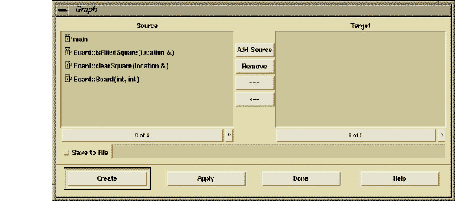

Creating Graphs
A graph works by taking a selection of functions from the Browser and sending them to the Graph dialog box. In the Graph dialog box, you construct a function query. If your query contains one or more valid paths between two or more functions, DIScover builds a Graph view or an ASCII report, depending on your choice of output. DIScover informs you that it could not build a graph using the selected functions in the event of missing or incomplete data.
After highlighting a set of functions in the Browser’s Elements or Results columns (one or the other, not both), create a Graph by selecting View > Graph from the main menu. This opens the Graph dialog box with the highlighted entities.

The Graph dialog box lets you take a set of selected functions from the Browser and determine which of the functions serve as source or target in your function query.
Note: The Graph dialog box accepts selected functions from the Elements or Results column, but not from both. If you want to use functions from both columns, select the functions in the Browser, create a group, display the group’s members, and select the desired functions from among the resulting display.
When the Graph dialog box first appears, DIScover places all of the selected functions in the Source column. You need to determine which of these entities you want in the Targets column.
You can use the arrow buttons to move functions between the two columns (Graph allows multiple functions in both columns). This defines your function query for the DIScover path-mapping process.
As with the Browser, you can use keystrokes in the Source and Target columns to:
• find a specific function name (click a column and type the name of a function)
• select all functions (C-/)
• deselect all but the first selected function (C-\)
Related Topics
To add additional functions to the selections in the Graph dialog box